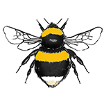
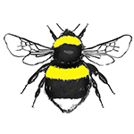
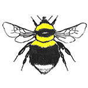
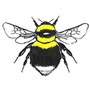

White-Tailed Bumblebees


Here's a quick guide for spotting the difference between our white-bottomed friends. The white-tailed bumblebee is probable the one most people picture when thinking of a bumblebee. There are four species of true bumblebees with white tails. Bombus terrestis and Bombus lucorum are often confused. The have the same banding pattern and both have white tails. The difference is B. terrestis has a dirty white tail and almost orangeish bands whereas the b. lucorum is very clean looking; bright pale or lemon yellow bands and a spotless clean tail. I remember the difference by thinking lucorum sounds like luke-warm and terrestris is like the french word for earth, terre. B. hortorum and B. jonellus are almost the same apart from their faces so you really have to get up and personal to figure out these. Hortorum's face is long (or horselike) and jonellus has a heart-shape face. Best to catch them if you can in a plastic cup for a good examination.
| Image | Bumblebee Name | Common Name | Tail | Banding | Queen size | Worker | Male | Face Shape | Status |
|---|---|---|---|---|---|---|---|---|---|
|  | Bombus terrestris | Buff-Tailed Bumblebee | Off-white or buff-white | Dark yellow/orange bands one on thorax, one on top of abdomen | Large up to 20mm | Indistinguishable from B. lucorum | Same colouring as queen | Common | |
|  | Bombus lucorum | White-Tailed Bumblebee | Clean White | Lemon Yellow bands one on thorax, one on top of abdomen | Large up to 20mm | Same colouring as Queen | Same colouring as Queen | Common | |
|  | Bombus hortorum | Garden Bumblebee | White | 2 yellow stripes on thorax, one on top of abdomen | Medium-Large up to 18mm | Same colouring as Queen | Same colouring as Queen | Long face | Common |
|  | Bombus jonellus | Heath Bumblebee | White | 2 yellow stripes on thorax, one on top of abdomen | Smaller up to 16mm in length | Same colouring as Queen | Also has yellow face | Shorter heart -shaped face | Common |